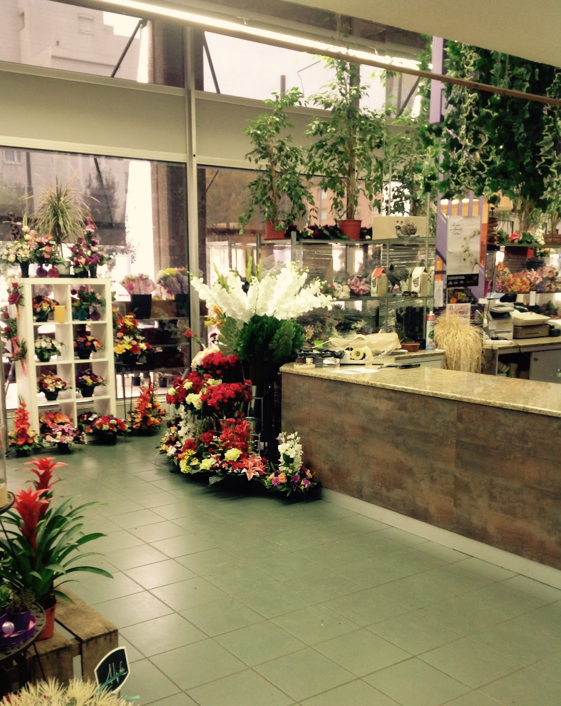
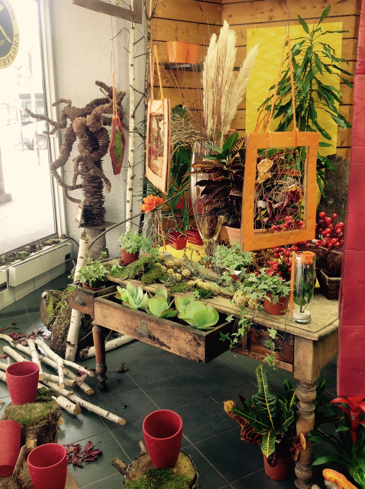
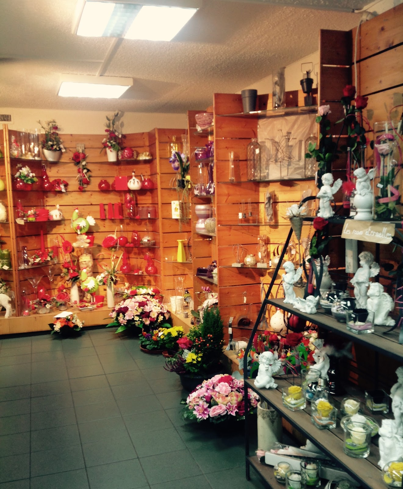
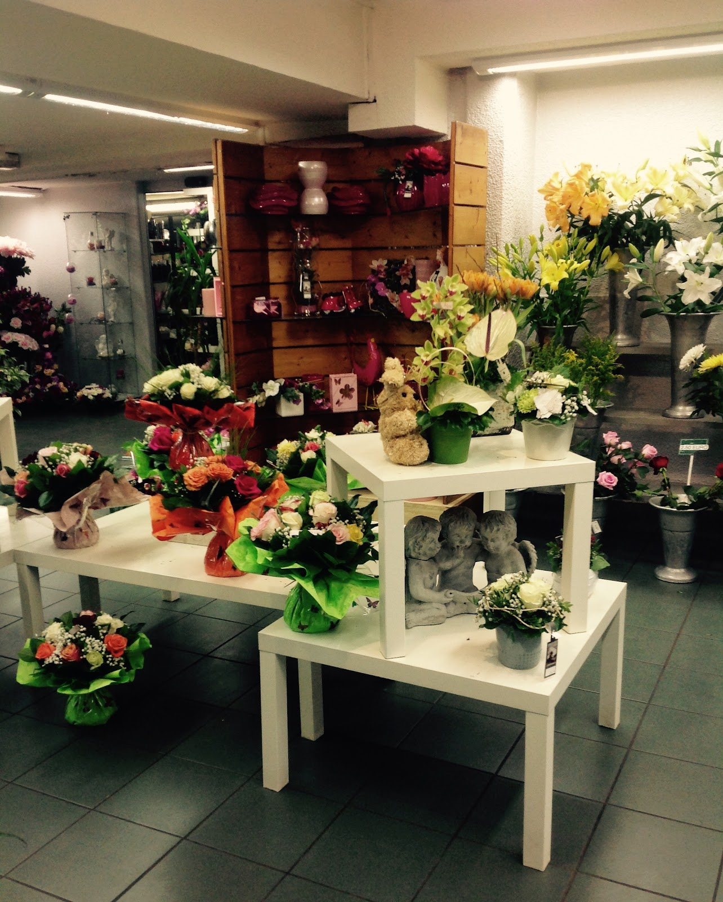

Bouquets & compositions
Pour offrir, remercier, célébrer ou simplement fleurir un intérieur, choisissez vos fleurs en boutique et demandez conseil selon l’occasion.
Fleuriste · Saint-Étienne
Bouquets, compositions et créations florales à découvrir au 54 Rue Bergson, avec le conseil en boutique lorsque vous en avez besoin.
La boutique
Chez Philippe Fleurs, la boutique se parcourt librement : on regarde, on choisit, puis on demande conseil si besoin.
Les avis clients mettent notamment en avant la qualité des fleurs, la gentillesse de l’accueil et des compositions réalisées pour des moments aussi différents qu’un mariage ou un hommage.
Voir les horaires et l’adresse

Pour vos moments
La boutique compose autour de vos envies et des occasions évoquées par ses clients.
Pour offrir, remercier, célébrer ou simplement fleurir un intérieur, choisissez vos fleurs en boutique et demandez conseil selon l’occasion.
Plusieurs avis saluent les bouquets de mariée et compositions réalisées pour des mariages, de la cérémonie aux bouquets de table.
Dans ces moments particuliers, la boutique peut réaliser une composition en tenant compte des souhaits exprimés, comme en témoigne un avis client.
Une demande particulière ? Le plus simple est d’échanger directement avec la boutique.
Appeler le 04 77 74 52 17En images
Quelques vues de l’univers Philippe Fleurs, entre fleurs coupées, plantes et compositions.


Ils en parlent
Voici les cinq avis disponibles dans la fiche transmise, reproduits sans modification.
Infos pratiques
Questions fréquentes
La boutique est située au 54 Rue Bergson, 42000 Saint-Étienne. Le bouton « Itinéraire » ouvre directement Google Maps avec cette adresse comme destination.
La boutique est ouverte du mardi au samedi de 08:00 à 19:00, ainsi que le dimanche de 08:00 à 12:30. Elle est fermée le lundi.
Oui. Un avis client souligne justement la possibilité de flâner tranquillement dans le magasin puis de demander conseil si nécessaire. Pour une demande précise, vous pouvez aussi appeler la boutique avant de vous déplacer.
Des avis clients mentionnent des bouquets de mariée et des compositions florales réalisés par Philippe Fleurs pour des mariages. Pour discuter de votre besoin et de vos souhaits, contactez directement la boutique au 04 77 74 52 17.
Oui, un avis client fait état d’une composition florale réalisée pour le deuil d’un proche et préparée en fonction de souhaits exprimés par téléphone. La boutique pourra vous renseigner directement selon votre demande.
Le moyen le plus direct est d’appeler le 04 77 74 52 17. Sur mobile, le bouton d’appel reste accessible en bas de l’écran pendant votre navigation.
Philippe Fleurs · Saint-Étienne
Appelez la boutique ou venez découvrir les fleurs directement Rue Bergson.